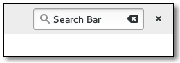

Gtk.SearchBar
Example
Methods
| Inherited: | Gtk.Bin (1), Gtk.Container (27), Gtk.Widget (256), GObject.Object (33), Gtk.Buildable (10) |
|---|
| static | new() |
| connect_entry(entry) | |
| get_search_mode() | |
| get_show_close_button() | |
| handle_event(event) | |
| set_search_mode(search_mode) | |
| set_show_close_button(visible) |
Virtual Methods
| Inherited: | Gtk.Container (10), Gtk.Widget (82), GObject.Object (7), Gtk.Buildable (10) |
|---|
Properties
| Inherited: | Gtk.Container (3), Gtk.Widget (38) |
|---|
| Name | Type | Flags | Short Description |
|---|---|---|---|
| search-mode-enabled | bool | r/w | Whether the search mode is on and the search bar shown |
| show-close-button | bool | r/w/c | Whether to show the close button in the toolbar |
Style Properties
| Inherited: | Gtk.Widget (17) |
|---|
Signals
| Inherited: | Gtk.Container (4), Gtk.Widget (69), GObject.Object (1) |
|---|
Fields
| Inherited: | Gtk.Bin (1), Gtk.Container (1), Gtk.Widget (1), GObject.InitiallyUnowned (3), GObject.Object (3) |
|---|
| Name | Type | Access | Description |
|---|---|---|---|
| parent | Gtk.Bin | r |
Class Details
- class Gtk.SearchBar(**kwargs)
Bases: Gtk.Bin
Gtk.SearchBar is a container made to have a search entry (possibly with additional connex widgets, such as drop-down menus, or buttons) built-in. The search bar would appear when a search is started through typing on the keyboard, or the application’s search mode is toggled on.
For keyboard presses to start a search, events will need to be forwarded from the top-level window that contains the search bar. See Gtk.SearchBar.handle_event () for example code. Common shortcuts such as Ctrl+F should be handled as an application action, or through the menu items.
You will also need to tell the search bar about which entry you are using as your search entry using Gtk.SearchBar.connect_entry (). The following example shows you how to create a more complex search entry.
## Creating a search bar
[A simple example](https://git.gnome.org/browse/gtk+/tree/examples/search-bar.c)
- static new()
Returns: a new Gtk.SearchBar Return type: Gtk.Widget Creates a Gtk.SearchBar. You will need to tell it about which widget is going to be your text entry using Gtk.SearchBar.connect_entry ().
New in version 3.10.
- connect_entry(entry)
Parameters: entry (Gtk.Entry) – a Gtk.Entry Connects the Gtk.Entry widget passed as the one to be used in this search bar. The entry should be a descendant of the search bar. This is only required if the entry isn’t the direct child of the search bar (as in our main example).
New in version 3.10.
- get_search_mode()
Returns: whether search mode is toggled on Return type: bool Returns whether the search mode is on or off.
New in version 3.10.
Returns: whether the close button is shown Return type: bool Returns whether the close button is shown.
New in version 3.10.
- handle_event(event)
Parameters: event (Gdk.Event) – a Gdk.Event containing key press events Returns: Gdk.EVENT_STOP if the key press event resulted in text being entered in the search entry (and revealing the search bar if necessary), Gdk.EVENT_PROPAGATE otherwise. Return type: bool This function should be called when the top-level window which contains the search bar received a key event.
If the key event is handled by the search bar, the bar will be shown, the entry populated with the entered text and Gdk.EVENT_STOP will be returned. The caller should ensure that events are not propagated further.
If no entry has been connected to the search bar, using Gtk.SearchBar.connect_entry (), this function will return immediately with a warning.
## Showing the search bar on key presses
<!-- language="C" --> static gboolean on_key_press_event (GtkWidget *widget, GdkEvent *event, gpointer user_data) { GtkSearchBar *bar = GTK_SEARCH_BAR (user_data); return gtk_search_bar_handle_event (bar, event); } g_signal_connect (window, "key-press-event", G_CALLBACK (on_key_press_event), search_bar);
New in version 3.10.
- set_search_mode(search_mode)
Parameters: search_mode (bool) – the new state of the search mode Switches the search mode on or off.
New in version 3.10.
Parameters: visible (bool) – whether the close button will be shown or not Shows or hides the close button. Applications that already have a “search” toggle button should not show a close button in their search bar, as it duplicates the role of the toggle button.
New in version 3.10.